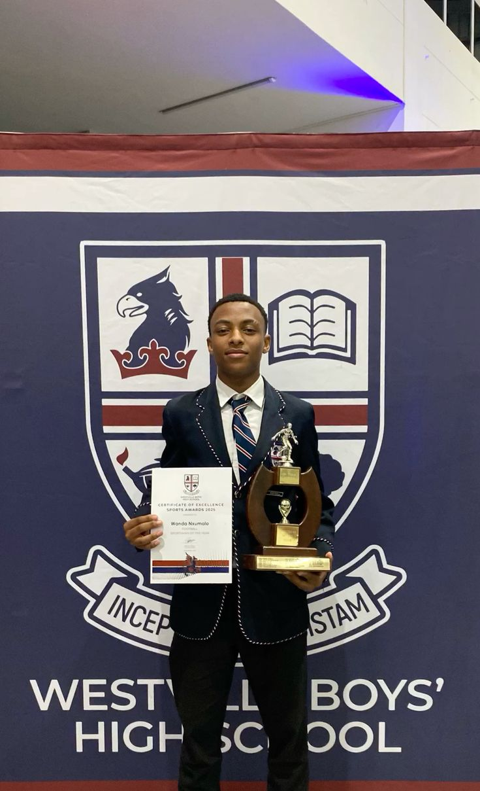

FINALIST PROFILE
Ssebunya Arafat.
Ugandan student • Bombo Muslim • 1st Runner-up
REGISTERED28 September 2026FINAL POSITION1st Runner-upPRIZE0 UGXVENUENakawa ICT Hub
CLOSING CEREMONY
Second-place recognition.
30 September 2026 • Nakawa ICT Hub
